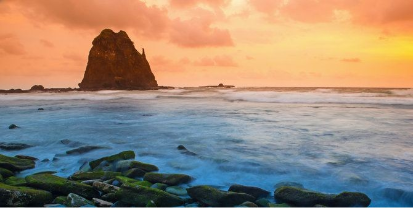
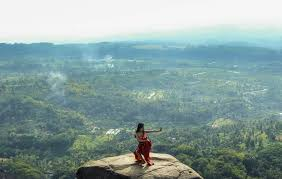
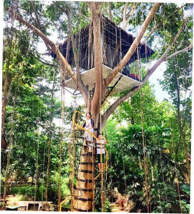
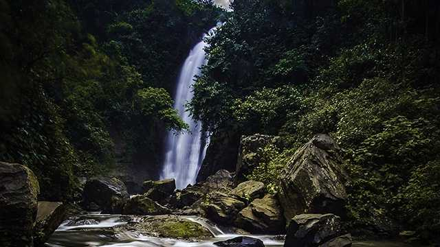
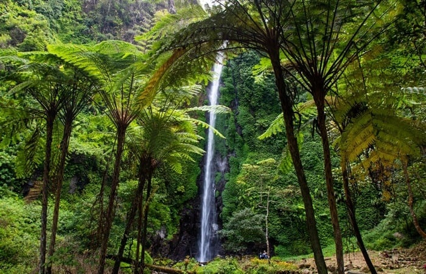
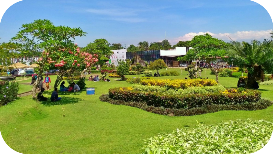

D AFTAR
D ESTINASI
W ISATA

Papuma (Pasir Putih Malikan) merupakan sebuah pantai yang terletak di
desa lojejer, kecamatan Wuluhan. Kurang lebih 45 km dari pusat kota Jember.
Harga tiket masuk berkisar Rp 17.000 dan parkir kendaraan untuk motor Rp 5.000
sedangkan mobil Rp. 10.000. Terdapat penginapan dengan harga yang berbeda-
beda dari yang murah sampai yang mahal. Disana juga terdapat berbagai toko
aksesoris dan warung-warung makan.

Pantai watu ulo letaknya bersebelahan dengan pantai Papuma, tetapi beda desa
dan beda kecamatan. Pantai watu ulo tepatnya terletak di desa Sumberjo,
kecamatan Ambulu. Untuk harga tiket masuk yaitu Rp 5.000 dan parkir kendaraan
bermotor Rp. 5.000, mobil Rp. 10.000. Disini juga banyak warung-warung yang
menjual masakan khas tepi pantai (seafood) serta terdapat beberapa toko aksesoris
yang menjual berbagai macam kerajinan tangan.

Bertempat di desa Andongrejo kecamatan Tempurejo. Pantai ini bisa dibilang masih
asri, karena jarang ada pengunjung disana. Dikarenakan jalanan yang sangat rusak
serta jaraknya yang jauh. Namun dibalik itu semua, pantai Bandealit menyimpan
keindahan yang luar biasa, siapa pun akan betah berlama-lama disana. Jika bukan
di hari libur atau pada peringatan hari-hari besar, tidak ada harga tiket masuk bagi
para pengunjung. Namun jika Anda kesana tepat pada hari libur, Anda akan

Perkebunan Teh Gunung Gambir terletak di Desa Gelang, Kecamatan Sumber Baru, Kabupaten Jember, jawa Timur,
Tepatnya berada di Lereng pegunungan Argupuro yang berjarak sekitar 48km dari pusat kota Jember.
Tempat Wisata Kebun Teh ini buka 24 jam, karena didalamnya terdapat homestay yang bisa disewa untuk bermalam.
Harga Home Stay disini mulai Rp 150.000 sampai dengan Rp 250.000.
Harga tiket masuk wisata kebun teh Gunung Gambir ini cukup membayar Rp 3.000 per orang,
kemudian Rp 2.000 untuk parkir kendaraan roda dua dan Rp 5.000 untuk parkir kendaraan roda empat.

Pulau Nusa Barong namanya, pulau ini memiliki luas sekitar 6100 hektar dan berada di samudra hindia
Pulau yang terletak di Desa Puger Wetan, Kecamatan Puger, Kabupaten Jember,
Jawa Timur ini merupakan salah satu pulau terluar Indonesia.
Pulau ini mirip dengan Phi-phi Island di Phuket. Pantai dan alamnya sangat menakjubkan
seolah tidak ada batas untuk keindahannya.
Kamu akan dikenakan tarif sebesar Rp. 1.500.000 dengan kapasitas 8 orang.

Lokasinya di desa Sucopangepok,kecamatan jelbuk. Wisata ini menawarkan
pemandangan insah yang dilihat dari ketinggian. Banyak spot-spot foto yang
banyak digemari oleh para golongan muda. Untuk harga tiket masuk dibandrol
Rp.5000/orang dan juga biaya parkir Rp. 5000 untuk motor,Rp 10.000 untuk mobil

Terletak sekitar 15km dari pusat kota,ke arah utara,yakni di desa kemuning lor,
kecamatan Arjasa. Puncak ini berada pada ketinggian 650 mdpl.Fasilitas yang
ditawarkan mulai dari hotel,kolam renang,tempat bermain hingga restoran.
Untuk tiket masuk dikenakan biaya sekitar Rp 8.000

Berlokasi di desa Kamal,Kecamatan Arjasa. Wisata sejarah peninggalan abad 4
masehi ini cocok untuk dijadikan sebagai wisata edukasi bagu anak-anak untuk
memperkenalkan tentang sejarah.Di situs duplang ini terdapat koleksi-koleksi unik
jaman meghalitikum seperti kubur batu dan menhir. Pengunjung tidak dibebani
dengan tiket masuk,hanya ada dana seikhlasnya untuk pemeliharaan koleksi

Taman botani merupakan salah satu tempat wisata yang terkenal di kota Jember.
Terdapat kolam renang, kolam ikan,cafe,dan restoran. Wisata ini tepatnya
berlokasi di kecamatan Sukorambi,sekitar 11 km dari pusat kota.Dibuka
mulai dari pukul 7 pagi sampai pukul 4 sore

Air terjun ini berlokasi di desa Manggisan,kecamatan Tanggul. Dengan ketinggian
15 meter,air terjun ini mampu menarik perhatian masyarakat Jember. Harga tiket
masuk dibandrol senilai Rp 5000/orang

Air terjun yang satu ini ketinggiannya sangat rendah dibanding dengan air terjun
lain yang berada di kabupaten jember. Namun keindahannya tidak kalah dengan
yang lainnya. Air terjun ini berada di kecamatan Tempurejo. Untuk akses jalan yang
lebih mudah,sebaiknya melewati desa Blater. Terdapat mushola untuk ibadah bagi umat muslim

Berada di desa Suci,kecamatan Panti. Air terjun ini merupakan salah satu air terjun
yang tinggi di kota Jember. Ketinggiannya mencapai 82 meter. Keindahan air
terjun ini sudah tidak perlu diragukan,namun untuk aksesnya bisa dibilang lumayan
sulit. jalannya masih berbatu dan kurang terawat,hanya bisa dilewati kendaraan
bermotor. Disana terdapat warung-warung yang menyediakan makanan serta bensin

Pusat penelitian kopi dan kakao ini ramaii dikunjungi pengunjung di hari-hari libur
karena disana para pengunjung bebas menikmati pemandangan,atau mencicipi
aneka kopi dan kakao, melihat proses pembuatannya ataupun berkeliling naik mobil
berbentuk kereta. Tempatnya sangat sejuk dan luas, Terdapat lapangan tenis,mushola,
warung serta cafe. Wisata ini terletak di desa Nagasari kecamatan Rambipuji

Taman Galaxy,berada di kecamatan Tempurejo,merupakan sebuah taman sekaligus kebun
binatang yang mengoleksi berbagai macam binatang seperti buaya,kera,burung,dan yang lainnya
Taman ini dibuka mulai pukul 8 pagi hingga pukul 5 sore. Untuk biaya tiket masuk dikenakan
biaya sekitar Rp. 10.000

Meru Betiri merupakan salah satu taman nasional yang berada di kabupaten Jember.
Lokasinya berada di desa Andongrejo,kecamatan Tempurejo. Taman Nasional Meru Betiri
(TNMB) ini digunakan sebagi cagar alam dan tempat konservasi flora dan fauna yang
dilindungi dari kepunahan (seperti harimau jawa, penyu, bunga reflesia,dan lain lain).
TNMB dibuka mulai dari jam 8 pagi hingga jam 5 sore.

Daftar Akomodasi


Alamat : Jalan Sentot
Prawirodirjo No. 88, Kaliwates,
Jember
Rating : 8.2 / 10
Alamat : Jalan Gatot
Subroto No. 47, Kaliwates,
Jember
Rating : 8.6 / 10
Alamat : Jalan Doho no.8,
Sumbersari, Jember.
Rating : 8.6 / 10


Alamat : Jl.Cempaka No.50
Patrang,Jember.
Rating : 8.2 / 10
Alamat : Jalan Diponegoro
Kaliwates,Jember
Rating : 8.5 / 10
Alamat : Jalan Karimata
Kav 22,Sumbersari
Jember
Rating : 8.3 / 10


Alamat : Nusantara Street No.
18 Kaliwates,Jember.
Rating : 8.4 / 10
Alamat : Jl. Karimata No 43
Jember Regency,Sumbersari
Jember.
Rating : 8.5 / 10
Alamat : Jalan KH. Agus Salim
No.28,Kaliwates,
Jember.
Rating : 8.2 / 10